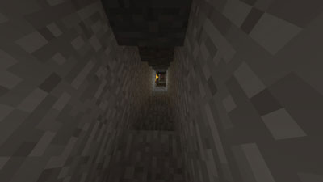

How to Mine
1.You need materials to mine. This is all the materials you need: a pixaxe, torches,
a shovel, food, a sword, and some spare blocks. These items will help you throughout
the mine.
2.Now, it's time for the real mining, with your shovel, break two blocks of dirt
beneath you. Then, you should fall into the hole. Break one block at your head and one
at your feet. Walk into the space you broke. Then, break the block below you, you
should fall down. Repeat this until you think you are deep enough. Then, break out a big
area and search for ores and vaulubles.
3.If it gets to dark then be sure to place a torch when it gets too dark. If you don't
mobs will spawn and you will have to fight them off.
4.You need to now some stuff before you mine. First, a wooden picaxe can only
break stone and coal. A stone picaxe can only break stone, iron, and coal. A iron picaxe
can break anything and so can dimand and gold.
